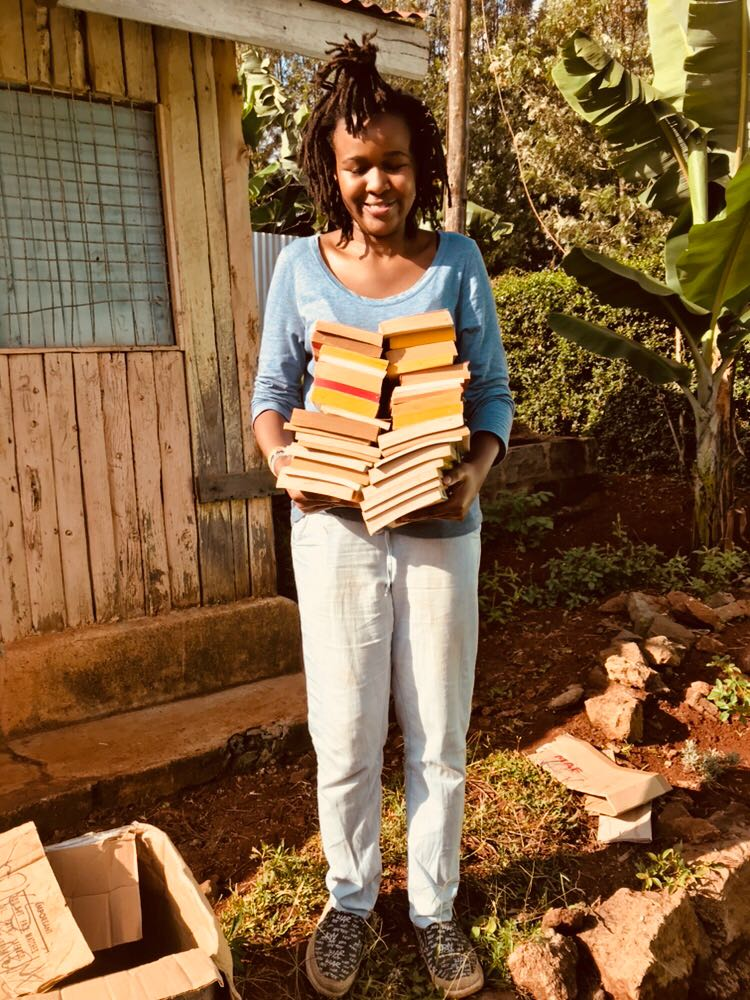
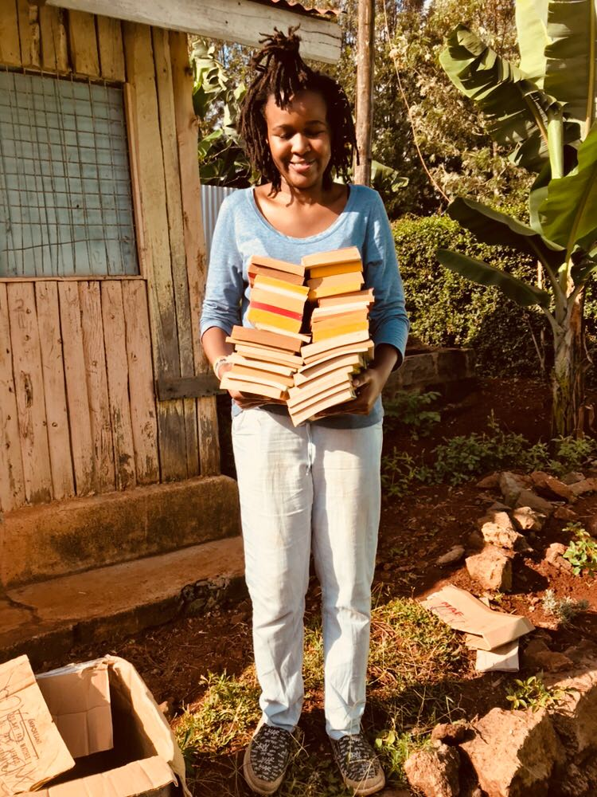

23rd October 2017
Our literacy campaign programme launched by Chao Mtwanguo Mitchelle.
Our literacy campaign programme launched by Chao Mtwanguo Mitchelle.
Radio Maria, a church based radio station interviewed our founder. This raised awareness more awareness about the programme and by December 2017, we had collected 1400 books.
We had collected over 3000 books.
Camel Assembly in support of Chao & Friends Literacy Campaign Programme held an event commemorating world book and copyright day and celebrating female authors. Featured authors included Jennie Marima, Wanjala Mshila Sio and Lanji Ouko. All three authors talked about their book inspirations, book writing process, challenges and publishing. The audien also engaged in a question and answer session and talked about books that have inspired and impacted their lives.
We launched the first two libraries in Nyolo Primary School and Kilulunyi Primary School, both in Taita Taveta – Kenya


 

Chao and Friends Foundation |